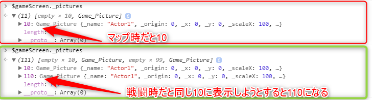

ツクールのピクチャ番号の扱いについて
概要
ツクールのピクチャ番号の扱いについて解説します。
デフォルトではMVはピクチャは1から100まで使用できますが、マップと戦闘では同じピクチャ番号で別の画像を表示できます。
マップでピクチャを表示していても、戦闘が始まったら消えますし、戦闘が終われば戦闘で使ったピクチャはマップに持ち越しません。
このあたりについて、内部的にどうなっているかを解説したいと思います。
ピクチャと実際の表示の関係
まず2つの要素を抑えておく必要があります。
Sprite・・・実際に画面に表示する画像
ピクチャ・・・画像ファイル名、座標、拡大率などの情報をまとめたデータ(内部的には$gamePicture)
Spriteはマップ、戦闘表示時にピクチャ番号分、生成され、ピクチャの情報を使って画面に画像を表示します。
ピクチャはセーブに含まれるので、ロードしても画像を復元できるようになっています。
プラグイン制作でよくあるケースなのですが、画面に表示しているSpriteをいじるだけだとセーブ・ロードでその内容が消えてしまいます。
マップと戦闘のピクチャ番号について
戦闘時に使われるピクチャ番号は内部的には101から200になっています。
以下のコードの箇所で、バトル時だけピクチャ番号にピクチャの最大枚数(100)を足して、ピクチャ番号を変換しています。
マップや戦闘以外でもピクチャを扱うようなプラグインではさらに201から300を扱うなどの対応をしているものがあります。
Game_Screen.prototype.realPictureId = function(pictureId) {
if ($gameParty.inBattle()) {
return pictureId + this.maxPictures();
} else {
return pictureId;
}
};
コンソールに$gameScreen._picturesと入力すると使っているピクチャの情報が出力されます(どのピクチャ番号が使われているかを見るのにも便利だったりします）。
マップと戦闘時にピクチャ10番に表示すると以下のように10と110に設定されているのがわかります。

ちなみに戦闘が終わってもこの101から200のピクチャは残り続け、次の戦闘の開始時に初期化されます。
(セーブファイルも多少大きくなるし、無駄な気がするのですが・・・。）
そのため、ピクチャ最大数を変更するプラグインを使う場合、マップ画面で戦闘のピクチャにアクセスしてしまうなどのバグが発生するケースがあります。
プラグインAではピクチャの最大数が150だと認識しているが、プラグインBではデフォルトの100が最大数だと認識している場合などといったケースです。